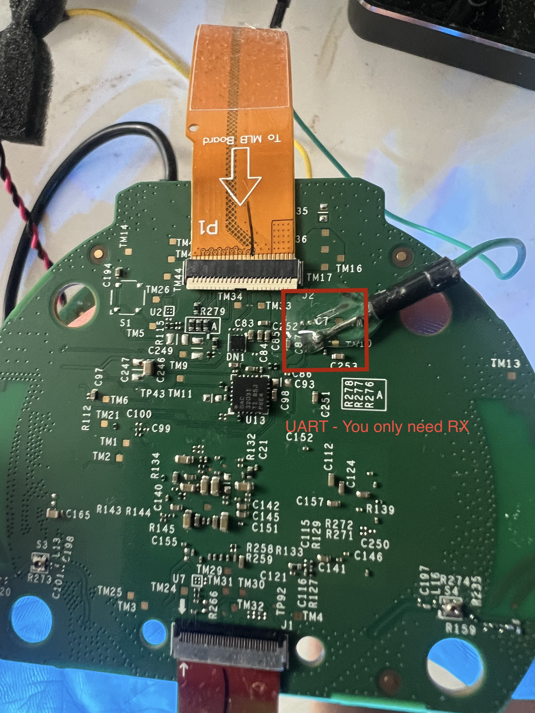
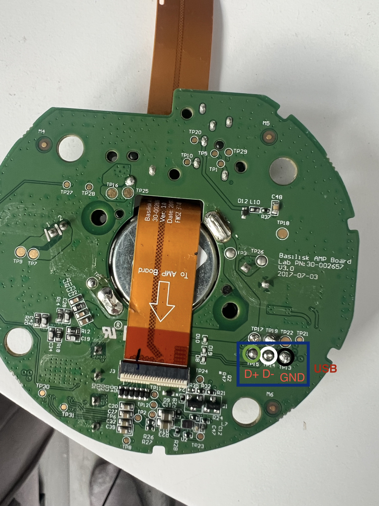

LibreEcho installation guide (preview)
Status: draft for review. This guide describes the physical preparation and
first-install workflow for the LibreEcho development hardware target: the
Amazon Echo 2nd generation (radar_puffin, MT8163). It is intentionally aimed
at a first-time hobbyist, but the procedure still involves exposed mains-derived
hardware, a fine-pitch PCB, soldering, and a boot-ROM recovery step.
Do not publish this page until the release-specific installer instructions,
board-revision notes, and the exact BROM short point have been checked against
the hardware revision being supported.
What you are going to do
At a high level, installation has six parts:
- Prepare a clean, static-safe work area.
- Open the Echo and identify the board revision.
- Add a temporary or permanent UART connection using soldered wires or pogo pins.
- Enter the MediaTek boot-ROM (BROM) mode using the board's approved short point.
- Run the official initial-install bundle for the matching release.
- Reassemble, boot LibreEcho, and complete first-boot checks.
This is not an OTA update guide. OTA updates are for a device that already has a
working LibreEcho installation. A first installation uses the initial-install
bundle published with the release.
Before you start
Read these warnings
- Unplug the Echo before opening it. Do not work on a powered board.
- Remove the battery connector if your board revision exposes one. Never solder
or probe a powered board.
- Use a 3.3 V USB-to-TTL serial adapter. Do not connect a 5 V UART adapter.
- The UART connection is for receiving logs. The annotated board photo identifies
the RX point used by the current setup; do not assume every similarly shaped pad
is UART.
- Never connect the adapter's
TX, VCC, or 5V wires unless a release-specific
hardware note explicitly tells you to. For the normal installation log, connect
GND and RX only.
- A BROM short is not a UART connection. Do not short the UART pad, USB data pads,
a random test pad, or a power rail.
- A shorting mistake can permanently damage the board. If the correct short point
is not clearly identified for your board revision, stop and ask for a verified
board photo rather than guessing.
- Keep one UART reader open during a boot attempt. Two programs reading the same
serial device produce confusing or incomplete logs.
Required equipment
Essential
- Amazon Echo 2nd generation compatible with the supported
radar_puffin board.
- Linux computer with a free USB port. A native USB-A port is preferable to a hub.
- Data-capable USB cable for the Echo's board connector or installation jig.
- 3.3 V USB-to-TTL UART adapter with a selectable baud rate.
- Fine-tip soldering iron with temperature control.
- Fine solder and flux suitable for electronics work.
- Fine wire, preferably enamelled wire or 30–34 AWG wire-wrap wire.
- Fine tweezers and a plastic spudger.
- Small Phillips/Torx drivers matching the enclosure screws.
- Bright bench light and magnification (head-mounted magnifier or microscope).
- ESD mat and wrist strap, or at minimum a grounded, static-safe work surface.
- Digital multimeter with continuity and resistance modes.
- Heat-shrink tubing, Kapton tape, or removable insulating tape.
- A known-good release download and its published SHA-256 checksum file.
Recommended for a repeatable build
- Spring-loaded pogo pins (fine-point, gold-plated; choose spacing after
measuring the pads).
- A small 3D-printed, acrylic, or hand-built pogo-pin jig.
- Logic-level serial adapter with a 3.3 V I/O setting and no automatic 5 V output.
- Current-limited bench supply for electronics work. Do not use it as a substitute
for the Echo's normal power system unless the project supplies a board-specific
power procedure.
- Silicone wire, strain relief, and a small connector if making a permanent UART
harness.
- USB extension cable so the computer can remain away from the open enclosure.
- Camera or phone to record connector orientation and screw locations.
Download the release
- Open the latest LibreEcho release.
- Confirm that the release supports your exact Echo model and board revision.
- Download the initial-install bundle and the matching SHA-256 checksum file.
- Verify the checksum before extracting or running anything:
sh
sha256sum --check libreecho-*-SHA256SUMS
- Read the
README included in the initial-install bundle. The bundle's
release-specific installer and preflight checks take precedence over examples
in this page.
Do not download a random boot.img, raw zImage, vendor partition image, or
an installer from an old issue comment. Do not use an OTA archive for a blank or
recovered device.
Open the Echo safely
- Disconnect the Echo from its power supply and all USB cables.
- Photograph the enclosure, speaker, button, and flex-cable orientations before
removing anything.
- Remove the outer cover with a plastic tool. Avoid metal tools near flex cables
and exposed contacts.
- Remove the screws and lift the board only far enough to reach the required pads.
- Do not pull on the orange flex cable. Release its connector latch before
disconnecting it.
- Place the board component-side up on an insulating, static-safe surface.
- Identify the PCB markings and record the board revision in your notes.
If the board layout does not match the photographs in this guide, stop. The
silkscreen reference designators are useful clues, but they are not a substitute
for a board-revision-specific pinout.
UART: soldered wires or pogo pins
UART is the best way to see what the board is doing. It is not required for every
OTA update, but it is strongly recommended for first installation and recovery.
The current documented setup uses receive-only UART: the computer reads the
Echo's boot messages through the board's UART RX signal.
Option A: solder temporary wires
- Work with the board completely unpowered.
- Apply a small amount of flux to the identified UART RX pad and a nearby ground
point approved for the board revision.
- Tin the end of a 30–34 AWG wire, then touch it to the pad only long enough to
make a clean joint.
- Inspect under magnification. There must be no solder bridge to adjacent pads.
- Add Kapton tape for strain relief. The wire must not pull on the pad when the
board is moved.
- Label the wire RX at the other end. Add a separate GND wire.
- Leave the UART adapter's TX and VCC disconnected unless the release notes
explicitly require them.
A fragile pad can lift from the PCB. If you are not comfortable soldering to
small surface-mount pads, use pogo pins or have an electronics technician fit the
harness.
Option B: use pogo pins
Pogo pins are preferable when you want a reversible connection or expect to work
on more than one device.
- Measure the pad diameter and centre-to-centre spacing with calipers.
- Build a jig that holds the pins perpendicular to the board and cannot slide.
- Use separate pins for RX and GND. Do not let the jig contact neighbouring
components or exposed power pads.
- Add a keyed connector or a clear colour code so RX cannot be confused with TX
or VCC.
- Test the jig with the board unpowered: continuity should exist only from the
intended pad to its jig contact.
- Add an insulating stop so the pins cannot be pushed hard enough to damage the
pad or flex cable.
Current annotated UART reference
The photo below is the present field reference for the RX location. The annotation
says UART - You only need RX. Treat it as a visual aid, not a universal pinout:

Connection summary:
| Echo board connection |
USB-to-TTL adapter |
Required? |
| Annotated UART receive point shown in the approved photo |
Adapter RX input |
Yes |
| Ground |
Adapter GND |
Yes |
| Any other UART point |
Adapter TX output |
No, leave disconnected initially |
| Any VCC/3V3/5V point |
Adapter power |
Never connect for this guide |
Connect the adapter's RX input to the single UART point identified by the
approved board photo. Do not infer TX/RX direction from a pad label alone: the
board annotation and release-specific pinout take precedence. This is why the
adapter's TX and VCC remain disconnected for the initial setup.
Configure the UART terminal
The project uses 921600 baud, 8 data bits, no parity, 1 stop bit (8N1) for
this target. Start the reader before requesting a reboot or entering BROM mode.
On Linux, identify the adapter:
sh
ls /dev/ttyUSB* /dev/ttyACM* 2>/dev/null
A simple raw capture is reliable for a first install:
sh
stty -F /dev/ttyUSB0 921600 cs8 -cstopb -parenb -ixon -ixoff -crtscts raw -echo
cat /dev/ttyUSB0 | tee libreecho-uart.log
Replace /dev/ttyUSB0 with the actual device. Stop the capture with Ctrl-C
after the install attempt. If the output is unreadable, stop and correct the
baud, ground, adapter voltage, and pad identification before interpreting it as
a boot failure.
Entering BROM mode: the shorting procedure
The shorting step is used only when the supported installer needs the MediaTek
boot-ROM connection. It is a brief, controlled contact between the verified
BROM short point and ground while the device is unpowered and being connected.
Important: The two annotated photos currently supplied with this guide show
UART/USB locations, not a verified BROM short point. They must not be used to
choose the short. Add a board-revision-specific BROM photograph or diagram before
publishing this section as a complete beginner procedure.
Once the correct point has been verified for the exact board revision:
- Close the release installer and any old
fastboot process.
- Start the single UART capture so you can see the boot-ROM handoff.
- Disconnect Echo power and USB. Leave the UART wires attached, but keep them
clear of the shorting tool.
- Connect the USB data cable to the computer, but do not yet rely on the board
being powered. Follow the release bundle's exact connection order.
- Use an insulated probe or a purpose-made jig to touch only the verified
BROM short point to the verified ground point.
- Apply/connect the board's normal power as specified by the release installer,
keeping the short in place only for the documented entry window.
- Watch for the MediaTek USB/BROM device to appear in the installer's preflight
or in
lsusb.
- Remove the short immediately after enumeration. Do not leave it fitted while
the installer writes anything.
- Run the bundle's preflight again, with the target device selected explicitly.
- If the device does not enumerate, disconnect power, remove the probe, and
retry only after checking orientation and the board-revision note.
Never drag a probe across the board. Never short a capacitor, inductor, crystal,
USB pad, battery contact, or a point selected from a different Echo model. Do not
use a metal screwdriver with a large exposed shaft. A pogo jig with a hard stop
is safer and more repeatable than hand-held tweezers.
Run the initial installer
The initial installer is intentionally gated. Use the exact command and options
printed by the release bundle, not a guessed fastboot command.
The safe sequence is:
- Confirm the bundle checksum passed.
- Confirm the device model and board revision.
- Confirm the installer sees the intended USB/BROM device.
- Confirm the installer is using the initial-install bundle, not an OTA file.
- Run its read-only preflight.
- Review the partitions and actions it proposes.
- Start the write only when you understand and accept those actions.
- Do not disconnect USB, touch the board, or interrupt power during a write.
- Preserve the installer output and UART log.
- Wait for the installer to report completion and follow its exact reboot step.
The installer must preserve the device's recovery path and must not be replaced by
an ad-hoc script that writes arbitrary partitions. If preflight fails, stop and
save the output; do not improvise with dd, raw partition names, or a different
image.
First boot and first-boot checks
After the installer reports success:
- Remove the shorting tool and confirm no loose wire can touch the board.
- Reconnect the board's normal flex cables carefully.
- Close the enclosure enough to prevent accidental contact, but keep UART
accessible for the first boot if practical.
- Power the Echo and watch the complete boot on UART.
- Confirm that the kernel banner identifies the expected LibreEcho image.
- Confirm the expected USB/ADB or network control transport appears.
- Open the LibreEcho web control centre from the address shown by the release
notes or device status.
- Complete the setup wizard and change any default credentials immediately.
- Test only the functions claimed by that release. A booting kernel is not proof
that Wi-Fi, Bluetooth, microphones, speakers, wake word, or AirPlay work.
- Keep the previous confirmed slot as rollback until runtime acceptance passes.
For a first install, record at least: release version, image checksum, board
revision, UART log, installer output, active slot, and any visible errors. Do not
post serial numbers, MAC addresses, Wi-Fi passwords, tokens, or private logs in a
public issue.
Troubleshooting
No serial device appears on the computer
- Try another USB port and a known-good data cable.
- Check that the adapter is 3.3 V logic, not 5 V.
- Check permissions for
/dev/ttyUSB0 or /dev/ttyACM0.
- Disconnect and reconnect the adapter, then check
dmesg.
- Do not change UART pins while the board is powered.
UART output is blank or unreadable
- Verify board ground is connected to adapter ground.
- Verify the adapter's RX input is connected to the board's TX/RX field point
shown in the approved diagram.
- Confirm 921600 8N1.
- Confirm no second terminal program has the port open.
- Capture raw bytes before applying filters; garbled text is not evidence of a
kernel panic.
BROM is not detected
- Stop the installer and remove power.
- Confirm the short point and ground point match the exact board revision.
- Confirm the short is applied only during the documented power/USB sequence.
- Confirm the UART/USB pads in the annotated photos were not used as the short.
- Try a different USB cable/port without a hub.
- If the device is already in fastboot, use the release's fastboot path instead of
repeating BROM entry.
The installer stops or reports a write failure
- Do not unplug immediately unless the installer explicitly says it is safe.
- Save the terminal output and UART capture.
- Do not retry a different partition or raw image.
- Ask for help with the release version, exact error, board revision, and the last
UART lines, after redacting serials and private identifiers.
Appendix: annotated USB pads
The second supplied image labels the exposed USB differential/data and ground pads.
It is useful when building a jig or checking a board-level USB connection:

These pads are not UART and are not the BROM short point. USB D+ and
D- are differential data signals; do not connect them to a TTL UART adapter.
What still needs to be added before publication
- Exact supported hardware revision(s), with a clear photo of the board label.
- A verified BROM short-point photograph/diagram for each supported revision.
- The release-specific initial-install command or a link to the bundle README.
- A verified enclosure teardown photo sequence.
- Expected first-boot UART markers and a short, release-specific acceptance list.
- A maintainer decision on whether the page belongs in this repository only or is
also mirrored on the public documentation site.